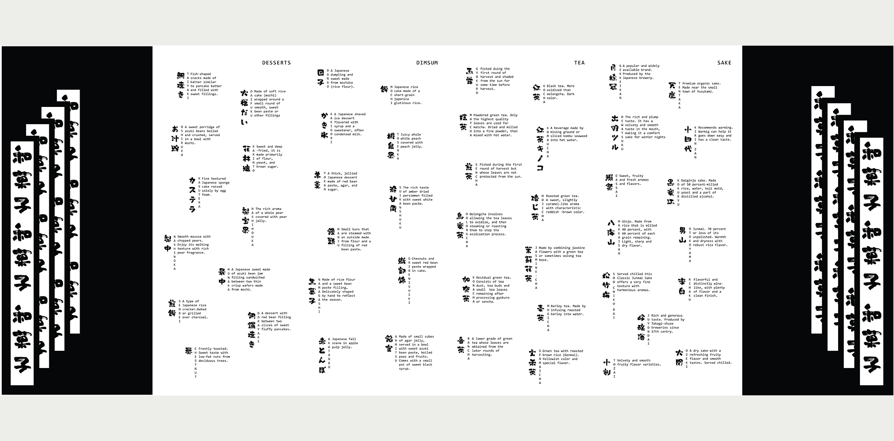
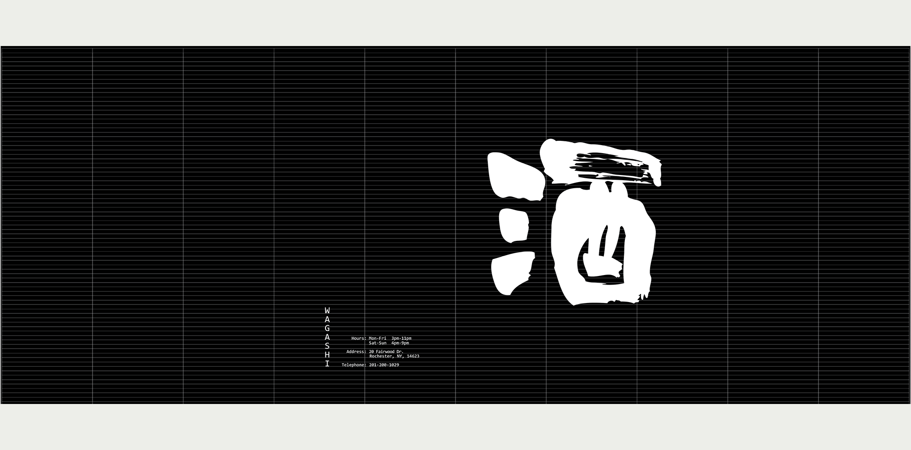
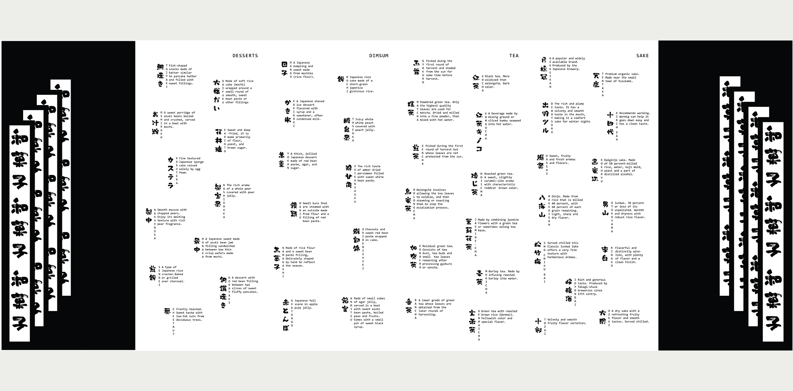
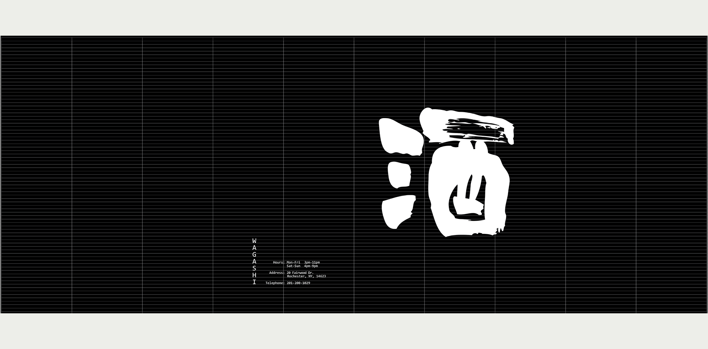

Wagashi
#Illustrator #Photoshop #Photoshop
Wagashi restaurant menu design. Wagashi means Japanese traditional confectioneries, the origin of the Japanese word for confectionery, kashi, traces back to when people first adopted nature’s familiar blessings of fruit, nuts, and berries into their daily lives. It became popular in Japan during the Edo period (1603 - 1868) and usually consumed in tea ceremony.